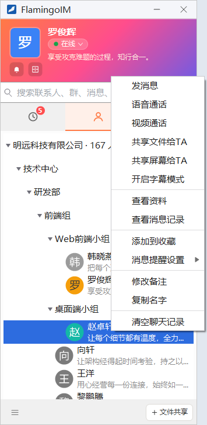
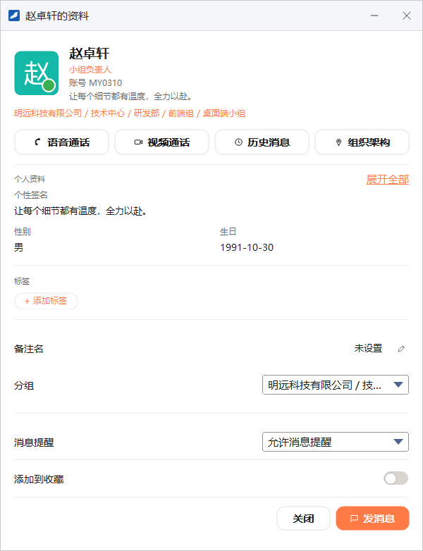
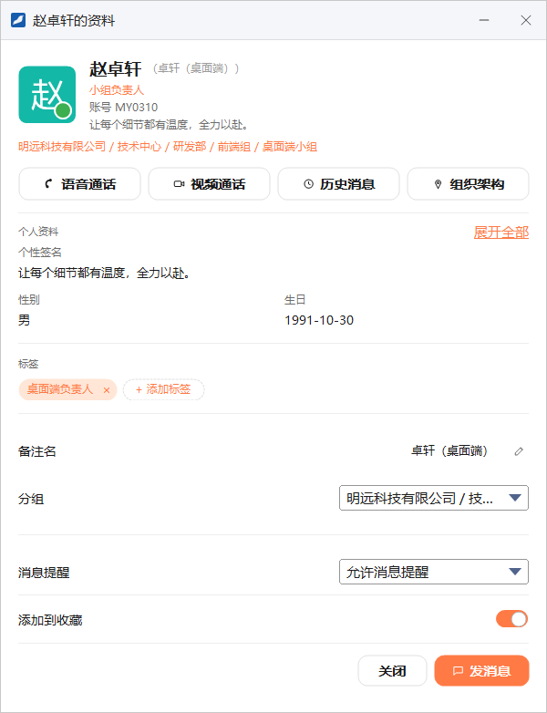
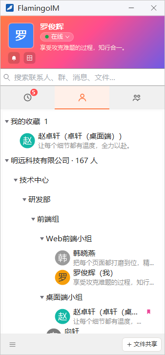

通讯录与联系人
FlamingoIM 的通讯录就是企业的组织架构，不需要添加好友，所有同事都在里面。本章介绍怎样在通讯录里找到同事、右键菜单里的各项操作，以及在联系人资料窗口中查看资料、设置标签、备注和收藏。
- 适用：全体员工
- 组织架构由企业管理员维护
组织架构树
点主面板的「联系人」页签（人像图标）即可看到通讯录：

- 第一层是企业，标题形如「明远科技有限公司 · 167 人」，数字是企业的总人数。
- 下面按部门逐级排列，点部门名展开或收起，例如「技术中心 → 研发部 → 前端组 → Web前端小组」。
- 每个人显示头像、姓名和个性签名；你自己的名字后面带「（我）」。
- 还没有分配到部门的同事列在「其他联系人」里，企业的服务号列在「服务号」里，这两组只在有内容时出现。
单击一个人只是选中他，双击打开与他的单聊窗口（双击自己则打开本人资料）。
同事很多时，直接在主面板顶部的搜索框里输入姓名、账号或拼音更快，见「认识主面板」。
组织架构有误？部门的划分和人员的归属由企业管理员在管理控制台中维护，员工在客户端里不能调整。发现错误请联系管理员，管理员的操作见「组织架构与员工」。
联系人右键菜单
在组织架构树里右键一位同事，会弹出联系人菜单：

| 菜单项 | 作用 |
|---|---|
| 发消息 | 打开与他的单聊窗口 |
| 语音通话 / 视频通话 | 向他发起通话（详见） |
| 共享文件给TA | 把本机的磁盘、文件夹或文件共享给他（详见） |
| 共享屏幕给TA | 打开单聊窗口并开始屏幕共享（详见） |
| 开启字幕模式 | 在桌面上以字幕的形式显示与他的聊天，不打开聊天窗口；开启后这一项变为「关闭字幕模式」（详见） |
| 查看资料 | 打开他的联系人资料窗口，见下一节 |
| 查看消息记录 | 打开与他的消息记录（详见） |
| 添加到收藏 | 把他放进「我的收藏」；已收藏时这一项变为「取消收藏」 |
| 消息提醒设置 ▸ | 设置收到他的消息时怎样提醒（详见） |
| 修改备注 | 打开他的资料窗口，并直接进入「备注名」的编辑状态 |
| 复制名字 | 把列表上显示的名字复制到剪贴板（设了备注时复制备注） |
| 清空聊天记录 | 清空你与他的单聊记录（详见） |
- 「共享文件给TA」「共享屏幕给TA」「开启字幕模式」在对应功能不可用时不出现。
- 右键你自己时，菜单里只有 查看资料 一项。
- 部门节点没有右键菜单。
联系人资料窗口
在组织架构树或「我的收藏」里右键一位同事，选 查看资料，会打开「他的名字的资料」窗口。每位同事各有一个资料窗口，可以同时打开多个：

1 2 3 4 5 6 7 8 9- 姓名、账号与部门：点姓名、账号或部门路径即可复制
- 快捷按钮：语音通话、视频通话、历史消息、组织架构
- 展开全部：查看对方的全部资料
- 标签：给对方贴标签
- 备注名：给对方起一个只有你看得到的名字
- 分组：显示对方所在的部门
- 消息提醒：收到对方消息时的提醒方式
- 添加到收藏：打开后对方出现在「我的收藏」里
- 发消息：打开与对方的单聊窗口
- 四个快捷按钮：语音通话 和 视频通话 直接向对方发起通话（需要在线）；历史消息 打开与对方的消息记录，读的是本机保存的记录，离线时也能查看；组织架构 关闭资料窗口，主面板切到「联系人」页签并定位、选中对方所在的那一行。
- 展开全部：默认只显示一部分资料（如个性签名、性别、生日），点它可以查看所在地、岗位、邮箱等全部资料。对方设为「仅自己可见」的手机号或座机不会显示。
设置标签
标签用来给同事做记号，例如他负责的工作、合作过的项目，方便以后辨认：
- 点「标签」下方的 + 添加标签。
- 输入标签文字，例如「桌面端负责人」，按 Enter 或在别处点一下确定，按 Esc 取消。
每个标签最多 16 个字符，一位同事最多贴 10 个标签。点标签上的文字可以修改它，点标签右侧的 × 删除它。
设置备注名
- 点「备注名」一行右侧的铅笔图标（这一行没有设置时显示「未设置」）。
- 输入备注，例如「卓轩（桌面端）」。
- 按 Enter 或在别处点一下保存，按 Esc 取消。
设置后，资料窗口里姓名的旁边会以灰色显示备注，通讯录里显示为「赵卓轩（卓轩（桌面端））」的形式。在右键菜单中选 修改备注 也会打开这个窗口并直接进入备注名的编辑状态。
消息提醒与收藏
- 消息提醒：在下拉框里选择收到对方消息时的提醒方式，可选项与右键菜单「消息提醒设置」中的相同，各项的含义见「会话列表与消息提醒」。
- 添加到收藏：打开开关后，对方出现在「联系人」页签顶部的「我的收藏」里；关闭开关即取消收藏。

标签和备注只有你自己看得到标签和备注名只影响你这一方的显示，对方看不到；同一位同事在不同同事那里可以有完全不同的标签和备注。
我的收藏
经常联系的同事可以加入收藏，不必每次在组织架构里一层层展开去找：

- 收藏的同事出现在「联系人」页签最上方的「我的收藏」分组里，分组标题后面的数字是收藏的个数。
- 在组织架构树里，被收藏的同事名字右侧有一个书签标记。
- 双击收藏里的同事同样会打开单聊窗口。
- 群也可以收藏：在「消息」页签或「群组」页签右键一个群，选 添加到收藏，收藏的群同样出现在「我的收藏」里，双击打开群聊窗口。
取消收藏：右键选 取消收藏，或在资料窗口里关闭 添加到收藏 开关。